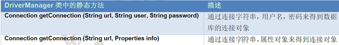

一、概念
JDBC（Java DataBase Connectivity ）
JDBC本质：其实是官方（sun公司）定义的一套操作所有关系型数据库的规则，即接口。各个数据库厂商去实现这套接口，提供数据库驱动jar包。我们可以使用这套接口（JDBC）编程，真正执行的代码是驱动jar包中的实现类。它是可以执行SQL语句的Java API
Java使用JDBC访问数据库的步骤：
- 1、得到数据库驱动程序
- 2、创建数据库连接
- 3、执行SQL语句
- 4、得到结果集
- 5、对结果集做相应的处理（增、删、改、查）
- 6、关闭资源：这里释放的是DB中的资源
一个小例子：
package cn.itcast.jdbc;
import java.sql.Connection;
import java.sql.DriverManager;
import java.sql.SQLException;
import java.sql.Statement;
public class JdbcDemo1 {
public static void main(String[] args) throws SQLException {
//1. 导入驱动jar包
//2.注册驱动
//Class.forName("com.mysql.jdbc.Driver");
//mysql5之后的驱动jar包可以省略注册驱动的步骤。
//3.获取数据库连接对象
Connection conn = DriverManager.getConnection("jdbc:mysql://localhost:3306/db3", "root", "root");
//Connection conn = DriverManager.getConnection("jdbc:mysql:///db3", "root", "root");
/*如果连接的是本机mysql服务器，并且mysql服务默认端口是3306，则url可以简写为：jdbc:mysql:///数据库名称*/
//4.定义sql语句
String sql = "update account set balance = 2000 where id = 1";
//5.获取执行sql的对象 Statement
Statement stmt = conn.createStatement();
//6.执行sql
int count = stmt.executeUpdate(sql);
//7.处理结果
System.out.println(count);
//8.释放资源
stmt.close();
conn.close();
}
}
执行后 没有报错
回到SQLyog查询表account
发现变了


二、各个类详解
1、DriverManager
DriverManager：驱动管理对象
JDBC的DriverManager是一个工厂类，我们通过它来创建数据库连接。
当JDBC的Driver类被加载进来时，它会自己注册到DriverManager类里面
然后我们会把数据库配置信息传成DriverManager.getConnection()方法，DriverManager会使用注册到它里面的驱动来获取数据库连接，并返回给调用的程序。
* 功能：
- 注册驱动：告诉程序该使用哪一个数据库驱动jar
static void registerDriver(Driver driver) :注册与给定的驱动程序 DriverManager 。
写代码使用： Class.forName(“com.mysql.jdbc.Driver”);
通过查看源码发现：在com.mysql.jdbc.Driver类中存在静态代码块
- 注册驱动：告诉程序该使用哪一个数据库驱动jar
static {
try {
java.sql.DriverManager.registerDriver(new Driver());
} catch (SQLException E) {
throw new RuntimeException("Can't register driver!");
}
}
注意：mysql5之后的驱动jar包可以省略注册驱动的步骤。
2. 获取数据库连接：
* 方法：static Connection getConnection(String url, String user, String password)
描述：通过连接字符串，用户名，密码来得到数据库的连接对象


1）url:指定连接的路径

* 语法：jdbc:mysql://ip地址(域名):端口号/数据库名称
* 例子：jdbc:mysql://localhost:3306/db3
* 细节：如果连接的是本机mysql服务器，并且mysql服务默认端口是3306，则url可以简写为：jdbc:mysql:///数据库名称
2）user：用户名
3）password：密码
2、Connection
功能：
- 获取执行sql 的对象
\* Statement createStatement()：创建一条SQL语句对象 \* PreparedStatement prepareStatement(String sql) 指定预编译的SQL语句，SQL语句中使用占位符？创建一个语句对象 - 管理事务：
\* 开启事务：setAutoCommit(boolean autoCommit) ：调用该方法设置参数为false，即开启事务 \* 提交事务：commit() \* 回滚事务：rollback()
3、Statement
Statement：执行sql的对象
作用：代表一条语句对象，用于发送QSL语句给服务器，用于执行静态SQL语句并返回他所生成结果的对象
执行sql语句的常用方法：
- boolean execute(String sql) ：（了解）
可用于执行任何SQL语句，返回一个boolean值，表明执行该SQL语句是否返回了ResultSet。如果执行后第一个结果是ResultSet，则返回true，否则返回false。但它执行SQL语句时比较麻烦，通常我们没有必要使用execute方法来执行SQL语句，而是使用executeQuery或executeUpdate更适合，但如果在不清楚SQL语句的类型时则只能使用execute方法来执行该SQL语句了。我们可以通过它的getResultSet方法来获取ResultSet，或者通过getUpdateCount()方法来获取更新的记录条数。
2. int executeUpdate(String sql) ：
执行DML（insert、update、delete）语句、DDL(create，alter、drop)语句
如果是DML语句，就是返回更新的次数，如果是DDl语句就返回0
ResultSet executeQuery(String sql) ：
执行DQL（select)语句
Select语句几乎是使用最多的SQL语句，但也只能执行查询语句，执行后返回代表查询结果的ResultSet对象。
即使查询不到记录返回的ResultSet也不会为null。我们通常使用executeQuery来执行查询语句，这样的话如果传进来的是insert或者update语句的话，它会抛出错误信息为 “executeQuery method can not be used for update”的java.util.SQLException。
只有当你不确定是什么语句的时候才应该使用execute()方法，否则应该使用executeQuery或者executeUpdate方法
4、ResultSet
ResultSet：结果集对象,封装查询结果，对结果集进行遍历，取出每一行记录

getXxx(参数):获取数据
Xxx：代表数据类型 如： int getInt() , String getString()
参数：
1、int：代表列的编号,从1开始 如： getString(1)获取第一列的值
2、String：代表列名称。 如： getDouble(“balance”)获取balance这一列的值
使用步骤：
1. 游标向下移动一行
2. 判断是否有数据
3. 获取数据
例：
package cn.itcast.jdbc;
import java.sql.*;
/**
* 执行DDL语句
*/
public class JDBCDemo7 {
public static void main(String[] args) {
Connection conn = null;
Statement stmt = null;
ResultSet rs = null;
try {
//1. 注册驱动
Class.forName("com.mysql.jdbc.Driver");
//2.获取连接对象
conn = DriverManager.getConnection("jdbc:mysql:///db3", "root", "root");
//3.定义sql
String sql = "select * from account";
//4.获取执行sql对象
stmt = conn.createStatement();
//5.执行sql
rs = stmt.executeQuery(sql);
//6.处理结果
//循环判断游标是否是最后一行末尾。
while(rs.next()){
//获取数据
//6.2 获取数据
int id = rs.getInt(1);
String name = rs.getString("name");
double balance = rs.getDouble(3);
System.out.println(id + "---" + name + "---" + balance);
}
} catch (ClassNotFoundException e) {
e.printStackTrace();
} catch (SQLException e) {
e.printStackTrace();
} finally {
//7.释放资源
if(rs != null){
try {
rs.close();
} catch (SQLException e) {
e.printStackTrace();
}
}
if(stmt != null){
try {
stmt.close();
} catch (SQLException e) {
e.printStackTrace();
}
}
if(conn != null){
try {
conn.close();
} catch (SQLException e) {
e.printStackTrace();
}
}
}
}
}
5、PreparedStatement
PreparedStatement对象继承Statement对象，它比Statement对象更强大，使用起来更简单
- Statement对象编译SQL语句时，如果SQL语句有变量，就需要使用分隔符来隔开，如果变量非常多，就会使SQL变得非常复杂。PreparedStatement可以使用占位符，简化sql的编写
- Statement会频繁编译SQL。PreparedStatement可对SQL进行预编译，提高效率，预编译的SQL存储在PreparedStatement对象中
- PreparedStatement防止SQL注入。【Statement通过分隔符’++’,编写永等式，可以不需要密码就进入数据库】
PreparedStatement：执行sql的对象
1. SQL注入问题：在拼接sql时，有一些sql的特殊关键字参与字符串的拼接。会造成安全性问题
1. 输入用户随便，输入密码：a' or 'a' = 'a
2. sql：select * from user where username = 'fhdsjkf' and password = 'a' or 'a' = 'a'
2. 解决sql注入问题：使用PreparedStatement对象来解决
3. 预编译的SQL：参数使用?作为占位符
4. 步骤：
1. 导入驱动jar包 mysql-connector-java-5.1.37-bin.jar
2. 注册驱动
3. 获取数据库连接对象 Connection
4. 定义sql
* 注意：sql的参数使用？作为占位符。 如：select * from user where username = ? and password = ?;
5. 获取执行sql语句的对象 PreparedStatement Connection.prepareStatement(String sql)
6. 给？赋值：
* 方法： setXxx(参数1,参数2)
* 参数1：？的位置编号 从1 开始
* 参数2：？的值
7. 执行sql，接受返回结果，不需要传递sql语句
8. 处理结果
9. 释放资源
5. 注意：后期都会使用PreparedStatement来完成增删改查的所有操作
1. 可以防止SQL注入
2. 效率更高例：
package cn.itcast.jdbc;
import cn.itcast.util.JDBCUtils;
import java.sql.*;
import java.util.Scanner;
/**
* 练习：
* * 需求：
* 1. 通过键盘录入用户名和密码
* 2. 判断用户是否登录成功
*/
public class JDBCDemo9 {
public static void main(String[] args) {
//1.键盘录入，接受用户名和密码
Scanner sc = new Scanner(System.in);
System.out.println("请输入用户名：");
String username = sc.nextLine();
System.out.println("请输入密码：");
String password = sc.nextLine();
//2.调用方法
boolean flag = new JDBCDemo9().login2(username, password);
//3.判断结果，输出不同语句
if(flag){
//登录成功
System.out.println("登录成功！");
}else{
System.out.println("用户名或密码错误！");
}
}
/**
* 登录方法
*/
public boolean login(String username ,String password){
if(username == null || password == null){
return false;
}
//连接数据库判断是否登录成功
Connection conn = null;
Statement stmt = null;
ResultSet rs = null;
//1.获取连接
try {
conn = JDBCUtils.getConnection();
//2.定义sql
String sql = "select * from user where username = '"+username+"' and password = '"+password+"' ";
System.out.println(sql);
//3.获取执行sql的对象
stmt = conn.createStatement();
//4.执行查询
rs = stmt.executeQuery(sql);
//5.判断
/* if(rs.next()){//如果有下一行，则返回true
return true;
}else{
return false;
}*/
return rs.next();//如果有下一行，则返回true
} catch (SQLException e) {
e.printStackTrace();
}finally {
JDBCUtils.close(rs,stmt,conn);
}
return false;
}
/**
* 登录方法,使用PreparedStatement实现
*/
public boolean login2(String username ,String password){
if(username == null || password == null){
return false;
}
//连接数据库判断是否登录成功
Connection conn = null;
PreparedStatement pstmt = null;
ResultSet rs = null;
//1.获取连接
try {
conn = JDBCUtils.getConnection();
//2.定义sql
String sql = "select * from user where username = ? and password = ?";
//3.获取执行sql的对象
pstmt = conn.prepareStatement(sql);
//给?赋值
pstmt.setString(1,username);
pstmt.setString(2,password);
//4.执行查询,不需要传递sql
rs = pstmt.executeQuery();
//5.判断
/* if(rs.next()){//如果有下一行，则返回true
return true;
}else{
return false;
}*/
return rs.next();//如果有下一行，则返回true
} catch (SQLException e) {
e.printStackTrace();
}finally {
JDBCUtils.close(rs,pstmt,conn);
}
return false;
}
}
防止sql注入成功
6、批量处理sql语句
当需要向数据库发送一批SQL语句执行时，应避免向数据库一条条发送执行，采用批处理以提升执行效率
批处理有两种方式：
- Statement
- PreparedStatement
通过executeBath()方法批量处理执行SQL语句，返回一个int[]数组，该数组代表各句SQL的返回值
1）Statement方式实现
/*
* Statement执行批处理
*
* 优点：
* 可以向数据库发送不同的SQL语句
* 缺点：
* SQL没有预编译
* 仅参数不同的SQL，需要重复写多条SQL
* */
Connection connection = JDBCUtils.getConnection();
Statement statement = connection.createStatement();
String sql1 = "UPDATE users SET name='zhongfucheng' WHERE id='3'";
String sql2 = "INSERT INTO users (id, name, password, email, birthday)" +
" VALUES('5','nihao','123','ss@qq.com','1995-12-1')";
//将sql添加到批处理
statement.addBatch(sql1);
statement.addBatch(sql2);
//执行批处理
statement.executeBatch();
//清空批处理的sql
statement.clearBatch();
JDBCUtils.release(connection, statement, null);
2)PreparedStatement方式实现
/*
* PreparedStatement批处理
* 优点：
* SQL语句预编译了
* 对于同一种类型的SQL语句，不用编写很多条
* 缺点：
* 不能发送不同类型的SQL语句
* */
Connection connection = JDBCUtils.getConnection();
String sql = "INSERT INTO test(id,name) VALUES (?,?)";
PreparedStatement preparedStatement = connection.prepareStatement(sql);
for (int i = 1; i <= 205; i++) {
preparedStatement.setInt(1, i);
preparedStatement.setString(2, (i + "zhongfucheng"));
//添加到批处理中
preparedStatement.addBatch();
if (i %2 ==100) {
//执行批处理
preparedStatement.executeBatch();
//清空批处理【如果数据量太大，所有数据存入批处理，内存肯定溢出】
preparedStatement.clearBatch();
}
}
//不是所有的%2==100，剩下的再执行一次批处理
preparedStatement.executeBatch();
//再清空
preparedStatement.clearBatch();
JDBCUtils.release(connection, preparedStatement, null);
三、抽取JDBC工具类（JDBCUtils）
1、代码实现
jdbc.properties
url=jdbc:mysql:///db3
user=root
password=root
driver=com.mysql.jdbc.Driver
JDBCUtils
package cn.itcast.util;
import java.io.FileReader;
import java.io.IOException;
import java.net.URL;
import java.sql.*;
import java.util.Properties;
/**
* JDBC工具类
*/
public class JDBCUtils {
//声明静态成员变量 只要静态成员变量才能被静态代码块和静态方法访问
private static String url;
private static String user;
private static String password;
private static String driver;
/**
* 文件的读取，只需要读取一次即可拿到这些值。使用静态代码块（随着类的加载而加载）
*/
static{
//读取资源文件，获取值。
try {
//1. 创建Properties集合类。
Properties pro = new Properties();
//获取src路径下的文件的方式--->ClassLoader 类加载器
ClassLoader classLoader = JDBCUtils.class.getClassLoader();
URL res = classLoader.getResource("jdbc.properties");//获得绝对路径
String path = res.getPath();//获得字符串路径
// System.out.println(path);///D:/IdeaProjects/itcast/out/production/day04_jdbc/jdbc.properties
//2. 加载文件
// pro.load(new FileReader("D:\\IdeaProjects\\itcast\\day04_jdbc\\src\\jdbc.properties"));
pro.load(new FileReader(path));
//3. 获取数据，赋值
url = pro.getProperty("url");
user = pro.getProperty("user");
password = pro.getProperty("password");
driver = pro.getProperty("driver");
//4. 注册驱动
Class.forName(driver);
} catch (IOException e) {
e.printStackTrace();
} catch (ClassNotFoundException e) {
e.printStackTrace();
}
}
/**
* 获取连接
* @return 连接对象
*/
public static Connection getConnection() throws SQLException {
return DriverManager.getConnection(url, user, password);
}
/**
* 释放资源
* @param stmt
* @param conn
*/
public static void close(Statement stmt,Connection conn){
//释放不能放在同一个try catch中，因为只要有一个关闭失败就会执行catch，而不会执行接下来的关闭，导致内存浪费
if( stmt != null){
try {
stmt.close();
} catch (SQLException e) {
e.printStackTrace();
}
}
if( conn != null){
try {
conn.close();
} catch (SQLException e) {
e.printStackTrace();
}
}
}
/**
* 释放资源重载 有时会有释放ResultSet
* @param stmt
* @param conn
*/
public static void close(ResultSet rs,Statement stmt, Connection conn){
if( rs != null){
try {
rs.close();
} catch (SQLException e) {
e.printStackTrace();
}
}
if( stmt != null){
try {
stmt.close();
} catch (SQLException e) {
e.printStackTrace();
}
}
if( conn != null){
try {
conn.close();
} catch (SQLException e) {
e.printStackTrace();
}
}
}
}
2、练习使用
需求：
通过键盘录入用户名和密码
判断用户是否登录成功
* select * from user where username = “” and password = “”;
* 如果这个sql有查询结果，则成功，反之，则失败
创建数据库表 user
CREATE TABLE USER(
id INT PRIMARY KEY AUTO_INCREMENT,
username VARCHAR(32),
PASSWORD VARCHAR(32)
);
INSERT INTO USER VALUES(NULL,’zhangsan’,’123’);
INSERT INTO USER VALUES(NULL,’lisi’,’234’);
package cn.itcast.jdbc;
import cn.itcast.utils.JDBCUtils;
import java.sql.*;
import java.util.Scanner;
public class JDBCDemo9 {
public static void main(String[] args) {
//1.键盘录入，接受用户名和密码
Scanner sc = new Scanner(System.in);
System.out.println("请输入用户名：");
String username = sc.nextLine();
System.out.println("请输入密码：");
String password = sc.nextLine();
//2.调用方法
boolean flag = new JDBCDemo9().login2(username, password);
//3.判断结果，输出不同语句
if(flag){
//登录成功
System.out.println("登录成功！");
}else{
System.out.println("用户名或密码错误！");
}
}
/**
* 登录方法
*/
public boolean login(String username ,String password){
if(username == null || password == null){
return false;
}
//连接数据库判断是否登录成功
Connection conn = null;
Statement stmt = null;
ResultSet rs = null;
//1.获取连接
try {
conn = JDBCUtils.getConnection();
//2.定义sql
String sql = "select * from user where username = '"+username+"' and password = '"+password+"' ";
System.out.println(sql);
//3.获取执行sql的对象
stmt = conn.createStatement();
//4.执行查询
rs = stmt.executeQuery(sql);
//5.判断
/* if(rs.next()){//如果有下一行，则返回true
return true;
}else{
return false;
}*/
return rs.next();//如果有下一行，则返回true
//直接返回rs.next()因为他本是就是true 或false
} catch (SQLException e) {
e.printStackTrace();
}finally {
JDBCUtils.close(rs,stmt,conn);
}
return false;
}
/**
* 登录方法,使用PreparedStatement实现
*/
public boolean login2(String username ,String password){
if(username == null || password == null){
return false;
}
//连接数据库判断是否登录成功
Connection conn = null;
PreparedStatement pstmt = null;
ResultSet rs = null;
//1.获取连接
try {
conn = JDBCUtils.getConnection();
//2.定义sql
String sql = "select * from user where username = ? and password = ?";
//3.获取执行sql的对象
pstmt = conn.prepareStatement(sql);
//给?赋值
pstmt.setString(1,username);
pstmt.setString(2,password);
//4.执行查询,不需要传递sql
rs = pstmt.executeQuery();
//5.判断
/* if(rs.next()){//如果有下一行，则返回true
return true;
}else{
return false;
}*/
return rs.next();//如果有下一行，则返回true
} catch (SQLException e) {
e.printStackTrace();
}finally {
JDBCUtils.close(rs,pstmt,conn);
}
return false;
}
}
四、JDBC事务管理
1、概述
- 事务：一个包含多个步骤的业务操作。如果这个业务操作被事务管理，则这多个步骤要么同时成功，要么同时失败。
- 操作：
- 开启事务
- 提交事务
- 回滚事务
- 使用Connection对象来管理事务
- 开启事务：setAutoCommit(boolean autoCommit) ：调用该方法设置参数为false，即开启事务
- 在执行sql之前开启事务
- 提交事务：commit()
- 当所有sql都执行完提交事务
- 回滚事务：rollback()
- 在catch中回滚事务
- 开启事务：setAutoCommit(boolean autoCommit) ：调用该方法设置参数为false，即开启事务
2、转账案例
package cn.itcast.jdbc;
import java.sql.Connection;
import java.sql.DriverManager;
import java.sql.PreparedStatement;
import java.sql.SQLException;
/*事务操作*/
public class JDBCDemo10 {
public static void main(String[] args) throws SQLException {
Connection conn=null;
PreparedStatement pstmt1=null;
PreparedStatement pstmt2=null;
try {
//1、获取连接
conn = DriverManager.getConnection("jdbc:mysql:///db3", "root", "root");
//2. 定义sql
//2.1张三-500
//String sql = "update account set balance =balance-500 where id=1";
String sql1 = "update account set balance =balance-? where id=?";
//2.2李四+500
String sql2 = "update account set balance =balance+? where id=?";
//3.获取执行sql的对象 Statement
pstmt1 = conn.prepareStatement(sql1);
pstmt2 = conn.prepareStatement(sql2);
//4.设置参数
//张三-500
pstmt1.setDouble(1,500);//第一个参数1代表我正在给第1个？赋值 第二个参数500代表？处的赋值为500（balance）
pstmt1.setInt(2,1);//第一个参数2代表我正在给第2个？赋值 第二个参数500代表？处的赋值为1（id）
//李四+500
pstmt2.setDouble(1,500);
pstmt2.setInt(2,2);
//5、执行SQL
pstmt1.executeUpdate();
pstmt2.executeUpdate();
} catch (SQLException e) {
e.printStackTrace();
}finally {
pstmt1.close();
pstmt2.close();
conn.close();
}
}
}成功修改
手动制造异常：
pstmt1.executeUpdate();
//手动制造异常
int i=3/0;
pstmt2.executeUpdate();
张三成功-500
李四没有变
解决：事务管理
package cn.itcast.jdbc;
import java.sql.Connection;
import java.sql.DriverManager;
import java.sql.PreparedStatement;
import java.sql.SQLException;
/*事务操作*/
public class JDBCDemo10 {
public static void main(String[] args) throws SQLException {
Connection conn=null;
PreparedStatement pstmt1=null;
PreparedStatement pstmt2=null;
try {
//1、获取连接
conn = DriverManager.getConnection("jdbc:mysql:///db3", "root", "root");
//开启事务
conn.setAutoCommit(false);
//2. 定义sql
//2.1张三-500
//String sql = "update account set balance =balance-500 where id=1";
String sql1 = "update account set balance =balance-? where id=?";
//2.2李四+500
String sql2 = "update account set balance =balance+? where id=?";
//3.获取执行sql的对象 Statement
pstmt1 = conn.prepareStatement(sql1);
pstmt2 = conn.prepareStatement(sql2);
//4.设置参数
//张三-500
pstmt1.setDouble(1,500);//第一个参数1代表我正在给第1个？赋值 第二个参数500代表？处的赋值为500（balance）
pstmt1.setInt(2,1);//第一个参数2代表我正在给第2个？赋值 第二个参数500代表？处的赋值为1（id）
//李四+500
pstmt2.setDouble(1,500);
pstmt2.setInt(2,2);
//提交事务
conn.commit();
//5、执行SQL
pstmt1.executeUpdate();
//手动制造异常
int i=3/0;
pstmt2.executeUpdate();
} catch (Exception e) {//抓大一点的异常
//事务回滚
if(conn!=null){
conn.rollback();
}
e.printStackTrace();
}finally {
pstmt1.close();
pstmt2.close();
conn.close();
}
}
}
有异常，如果张三李四两天数据都没有变化 说明事务管理成功
执行：控制台报错（手动制造异常处）且两条数据都没有变化
事务管理中，一旦出现异常，会回滚到开启异常，如果没有异常会提交事务
开始操作前：开启事务
操作都结束了：提交事务
一旦出现异常：catch里回滚事务
3、savapoint
我们还可以使用savepoint设置中间点。如果在某地方出错了，我们设置中间点，回滚到出错之前即可。
应用场景：现在我们要算一道数学题，算到后面发现算错数了。前面的运算都是正确的，我们不可能重头再算【直接rollback】，最好的做法就是在保证前面算对的情况下，设置一个保存点。从保存点开始重新算。
注意：savepoint不会结束当前事务，普通提交和回滚都会结束当前事务的
4、事务的隔离级别
数据库定义了4个隔离级别：
- Serializable【可避免脏读，不可重复读，虚读】
- Repeatable read【可避免脏读，不可重复读】
- Read committed【可避免脏读】
- Read uncommitted【级别最低，什么都避免不了】
分别对应Connection类中的4个常量
- TRANSACTION_READ_UNCOMMITTED
- TRANSACTION_READ_COMMITTED
- TRANSACTION_REPEATABLE_READ
- TRANSACTION_SERIALIZABLE
脏读：一个事务读取到另外一个事务未提交的数据
例子：A向B转账，A执行了转账语句，但A还没有提交事务，B读取数据，发现自己账户钱变多了！B跟A说，我已经收到钱了。A回滚事务【rollback】，等B再查看账户的钱时，发现钱并没有多。
不可重复读：一个事务读取到另外一个事务已经提交的数据，也就是说一个事务可以看到其他事务所做的修改
注：A查询数据库得到数据，B去修改数据库的数据，导致A多次查询数据库的结果都不一样【危害：A每次查询的结果都是受B的影响的，那么A查询出来的信息就没有意思了】
虚读(幻读)：是指在一个事务内读取到了别的事务插入的数据，导致前后读取不一致。
注：和不可重复读类似，但虚读(幻读)会读到其他事务的插入的数据，导致前后读取不一致
简单总结：脏读是不可容忍的，不可重复读和虚读在一定的情况下是可以的【做统计的肯定就不行】。
五、数据库连接池
1、概述
为什么我们要使用数据库连接池
• 数据库的连接的建立和关闭是非常消耗资源的
• 频繁地打开、关闭连接造成系统性能低下
概念：其实就是一个容器(集合)，存放数据库连接的容器。
当系统初始化好后，容器被创建，容器中会申请一些连接对象，当用户来访问数据库时，从容器中获取连接对象，用户访问完之后，会将连接对象归还给容器。好处：
- 节约资源
- 用户访问高效
2、实现介绍
标准接口：DataSource javax.sql包下的
- 方法：
- 获取连接：getConnection()
- 归还连接：Connection.close()。如果连接对象Connection是从连接池中获取的，那么调用Connection.close()方法，则不会再关闭连接了。而是归还连接
- 方法：
一般我们不去实现它，有数据库厂商来实现
- C3P0：数据库连接池技术
- Druid：数据库连接池实现技术，由阿里巴巴提供的
3、c3p0基本使用
步骤：
导入jar包 (两个) c3p0-0.9.5.2.jar mchange-commons-java-0.2.12.jar ，
- 不要忘记导入数据库驱动jar包mysql-connector-java-5.1.37-bin.jar
定义配置文件：
- 名称： c3p0.properties 或者 c3p0-config.xml
- 路径：直接将文件放在src目录下即可。
创建核心对象 数据库连接池对象 ComboPooledDataSource
获取连接： getConnection
代码：
//1.创建数据库连接池对象DataSource ds = new ComboPooledDataSource(); //2. 获取连接对象 Connection conn = ds.getConnection();
<c3p0-config>
<!-- 使用默认的配置读取连接池对象 -->
<default-config>
<!-- 连接参数 -->
<property name="driverClass">com.mysql.jdbc.Driver</property>
<property name="jdbcUrl">jdbc:mysql://localhost:3306/db4</property>
<property name="user">root</property>
<property name="password">root</property>
<!-- 连接池参数 -->
<property name="initialPoolSize">5</property>
<property name="maxPoolSize">10</property>
<property name="checkoutTimeout">3000</property>
</default-config>
<named-config name="otherc3p0">
<!-- 连接参数 -->
<property name="driverClass">com.mysql.jdbc.Driver</property>
<property name="jdbcUrl">jdbc:mysql://localhost:3306/day25</property>
<property name="user">root</property>
<property name="password">root</property>
<!-- 连接池参数 -->
<property name="initialPoolSize">5</property>
<property name="maxPoolSize">8</property>
<property name="checkoutTimeout">1000</property>
</named-config>
</c3p0-config>package cn.itcast.datasource.c3p0;
import com.mchange.v2.c3p0.ComboPooledDataSource;
import javax.sql.DataSource;
import java.sql.Connection;
import java.sql.SQLException;
public class C3P0Demo1 {
public static void main(String[] args) throws SQLException {
//1.创建数据库连接池对象
DataSource ds = new ComboPooledDataSource();
//2. 获取连接对象
Connection conn = ds.getConnection();
//3. 打印
System.out.println(conn);
}
}
验证最大连接数
<property name="maxPoolSize">10</property>最大连接数为10
package cn.itcast.datasource.c3p0;
import com.mchange.v2.c3p0.ComboPooledDataSource;
import javax.sql.DataSource;
import java.sql.Connection;
import java.sql.SQLException;
/**
* c3p0演示
*/
public class C3P0Demo2 {
public static void main(String[] args) throws SQLException {
/* //1. 获取DataSource，使用默认配置即c3p0-config.xml中的<default-config>
//c3p0-config.xml中有两个<default-config>和<named-config name="otherc3p0">
//<named-config name="otherc3p0"> 的超时时间是8s，最大个数是8
DataSource ds = new ComboPooledDataSource();
//2.获取连接
for (int i = 1; i <= 11 ; i++) {
//10的时候能全部打印出，改成11后打印完十个后报错
Connection conn = ds.getConnection();
System.out.println(i+":"+conn);
if(i == 5){
conn.close();//归还连接到连接池中
}
}*/
//用到第五个的时候，把他归还到线程池中，这是可以打印出11个
//并且从打印出的最后的哈希值可以看出第五个和第六个是同一个
//testNamedConfig();
}
public static void testNamedConfig() throws SQLException {
// 1.1 获取DataSource，使用指定名称配置
DataSource ds = new ComboPooledDataSource("otherc3p0");
//使用c3p0-config.xml中的第二段配置<named-config name="otherc3p0">
//2.获取连接
//<named-config name="otherc3p0">中的最大个数是8，所以打印完8个后报错
for (int i = 1; i <= 10 ; i++) {
Connection conn = ds.getConnection();
System.out.println(i+":"+conn);
}
}
}
4、druid基本使用
- 步骤：
- 导入jar包 druid-1.0.9.jar
- 定义配置文件：
- 是properties形式的
- 可以叫任意名称，可以放在任意目录下
- 加载配置文件。Properties
- 获取数据库连接池对象：通过工厂来来获取 DruidDataSourceFactory
- 获取连接：getConnection
- 代码：
//3.加载配置文件Properties pro = new Properties(); InputStream is = DruidDemo.class.getClassLoader().getResourceAsStream("druid.properties"); pro.load(is); //4.获取连接池对象 DataSource ds = DruidDataSourceFactory.createDataSource(pro); //5.获取连接 Connection conn = ds.getConnection();
解释：
JDBCUtilsConfig.class是获得当前对象所属的class对象
getClassLoader()是取得该Class对象的类装载器
getResourceAsStream(“database.properties”) 调用类加载器的方法加载 资源，返回的是字节流
使用Properties类是为了可以从.properties属性文件对应的文件输入流中，加载属性列表到Properties类对象，然后通过getProperty方法用指定的键在此属性列表中搜索属性
定义工具类
定义一个类 JDBCUtils
提供静态代码块加载配置文件，初始化连接池对象
提供方法
获取连接方法：通过数据库连接池获取连接
释放资源
获取连接池的方法
代码实现：
druid.properties
driverClassName=com.mysql.jdbc.Driver
url=jdbc:mysql://127.0.0.1:3306/db3
username=root
password=root
initialSize=5
maxActive=10
maxWait=3000package cn.itcast.datasource.c3p0.druid;
import com.alibaba.druid.pool.DruidDataSourceFactory;
import javax.sql.DataSource;
import java.io.InputStream;
import java.sql.Connection;
import java.util.Properties;
public class DruidDemo {
public static void main(String[] args) throws Exception {
//1.导入jar包 将druid-1.0.9.jar复制到libs文件夹下 添加为库
//2.定义配置文件 将druid.properties复制到src文件下
//3.加载配置文件
Properties pro = new Properties();
InputStream is = DruidDemo.class.getClassLoader().getResourceAsStream("druid.properties");
pro.load(is);
//4.获取连接池对象
DataSource ds = DruidDataSourceFactory.createDataSource(pro);
//5.获取连接
Connection conn = ds.getConnection();
System.out.println(conn);
}
}
5、druid工具类
定义一个类 JDBCUtils
提供静态代码块加载配置文件，初始化连接池对象
提供方法
获取连接方法：通过数据库连接池获取连接
释放资源
获取连接池的方法
工具类实现：package cn.itcast.utils;
import com.alibaba.druid.pool.DruidDataSourceFactory;
import javax.sql.DataSource;
import java.io.IOException;
import java.sql.Connection;
import java.sql.ResultSet;
import java.sql.SQLException;
import java.sql.Statement;
import java.util.Properties;
/**
* Druid连接池的工具类
*/
public class JDBCUtils02 {
//1.定义成员变量 DataSource
private static DataSource ds ;
static{
try {
//1.加载配置文件
Properties pro = new Properties();
pro.load(JDBCUtils.class.getClassLoader().getResourceAsStream("druid.properties"));
//2.获取DataSource
ds = DruidDataSourceFactory.createDataSource(pro);
} catch (IOException e) {
e.printStackTrace();
} catch (Exception e) {
e.printStackTrace();
}
}
/**
* 获取连接
*/
public static Connection getConnection() throws SQLException {
return ds.getConnection();
}
/**
* 释放资源
*/
public static void close(Statement stmt, Connection conn){
/* if(stmt != null){
try {
stmt.close();
} catch (SQLException e) {
e.printStackTrace();
}
}
if(conn != null){
try {
conn.close();//归还连接
} catch (SQLException e) {
e.printStackTrace();
}
}*/
close(null,stmt,conn);
}
public static void close(ResultSet rs , Statement stmt, Connection conn){
if(rs != null){
try {
rs.close();
} catch (SQLException e) {
e.printStackTrace();
}
}
if(stmt != null){
try {
stmt.close();
} catch (SQLException e) {
e.printStackTrace();
}
}
if(conn != null){
try {
conn.close();//归还连接
} catch (SQLException e) {
e.printStackTrace();
}
}
}
/**
* 获取连接池方法
*/
public static DataSource getDataSource(){
return ds;
}
}
工具类测试使用
druid.properties
driverClassName=com.mysql.jdbc.Driver
url=jdbc:mysql://127.0.0.1:3306/db3
username=root
password=root
#初始化的连接数量
initialSize=5
maxActive=10
#最大等待时间
maxWait=3000
package cn.itcast.datasource.c3p0.druid;
import cn.itcast.utils.JDBCUtils02;
import java.sql.Connection;
import java.sql.PreparedStatement;
import java.sql.SQLException;
public class druiddemo2 {
public static void main(String[] args) {
/*
* 完成添加操作：给account表添加一条记录
*/
Connection conn = null;
PreparedStatement pstmt = null;
try {
//1.获取连接
conn = JDBCUtils02.getConnection();
//2.定义sql
String sql = "insert into account values(null,?,?)";
//3.获取pstmt对象
pstmt = conn.prepareStatement(sql);
//4.给？赋值
pstmt.setString(1,"王五");
pstmt.setDouble(2,3000);
//5.执行sql
int count = pstmt.executeUpdate();
System.out.println(count);
} catch (SQLException e) {
e.printStackTrace();
}finally {
//6. 释放资源
JDBCUtils02.close(pstmt,conn);
}
}
}
六、Jdbc Template
Spring框架对JDBC的简单封装。提供了一个JDBCTemplate对象简化JDBC的开发
JdbcTemplate主要提供以下四类方法：
- execute方法：可以用于执行任何SQL语句，一般用于执行DDL语句；
- update方法及batchUpdate方法：update方法用于执行新增、修改、删除等语句；batchUpdate方法用于执行批处理相关语句；
- query方法及queryForXXX方法：用于执行查询相关语句；
- call方法：用于执行存储过程、函数相关语句
1、基本使用
Account
package com.itheima.domain;
import java.io.Serializable;
/**
* 账户的实体类
*/
public class Account implements Serializable {
//继承Serializable是为了序列化
//什么是序列化：简单说就是为了保存在内存中的各种对象的状态，并且可以把保存的对象状态再读出来
//什么时候需要序列化
/*
a）当你想把的内存中的对象保存到一个文件中或者数据库中时候；
b）当你想用套接字在网络上传送对象的时候；
c）当你想通过RMI传输对象的时候；*/
private Integer id;
private String name;
private Float money;
public Integer getId() {
return id;
}
public void setId(Integer id) {
this.id = id;
}
public String getName() {
return name;
}
public void setName(String name) {
this.name = name;
}
public Float getMoney() {
return money;
}
public void setMoney(Float money) {
this.money = money;
}
@Override
public String toString() {
return "Account{" +
"id=" + id +
", name='" + name + '\'' +
", money=" + money +
'}';
}
}
JdbcTemplateDemo1
package com.itheima.jdbctemplate;
import org.springframework.jdbc.core.JdbcTemplate;
import org.springframework.jdbc.datasource.DriverManagerDataSource;
/**
* JdbcTemplate的最基本用法
*/
public class JdbcTemplateDemo1 {
public static void main(String[] args) {
//准备数据源：spring的内置数据源
DriverManagerDataSource ds = new DriverManagerDataSource();
ds.setDriverClassName("com.mysql.jdbc.Driver");
ds.setUrl("jdbc:mysql://localhost:3306/eesy");
ds.setUsername("root");
ds.setPassword("root");
//1.创建JdbcTemplate对象
JdbcTemplate jt = new JdbcTemplate();
//给jt设置数据源
jt.setDataSource(ds);
//2.执行操作
jt.execute("insert into account(name,money)values('ccc',1000)");
}
}
执行 数据库中成功添加数据
但里面的内容都写死了
2、改进
JdbcTemplate在Spring的IoC中的使用
将其注入Spring容器中，而不是 使用new
bean.xml
<?xml version="1.0" encoding="UTF-8"?>
<beans xmlns="http://www.springframework.org/schema/beans"
xmlns:xsi="http://www.w3.org/2001/XMLSchema-instance"
xsi:schemaLocation="http://www.springframework.org/schema/beans
http://www.springframework.org/schema/beans/spring-beans.xsd">
<!--配置JdbcTemplate-->
<bean id="jdbcTemplate" class="org.springframework.jdbc.core.JdbcTemplate">
<property name="dataSource" ref="dataSource"></property>
</bean>
<!-- 配置数据源-->
<bean id="dataSource" class="org.springframework.jdbc.datasource.DriverManagerDataSource">
<property name="driverClassName" value="com.mysql.jdbc.Driver"></property>
<property name="url" value="jdbc:mysql://localhost:3306/eesy"></property>
<property name="username" value="root"></property>
<property name="password" value="1234"></property>
</bean>
</beans>
JdbcTemplateDemo2
import org.springframework.context.ApplicationContext;
import org.springframework.context.support.ClassPathXmlApplicationContext;
import org.springframework.jdbc.core.JdbcTemplate;
/**
* JdbcTemplate的最基本用法
*/
public class JdbcTemplateDemo2 {
public static void main(String[] args) {
//1.获取容器
ApplicationContext ac = new ClassPathXmlApplicationContext("bean.xml");
//2.获取对象
JdbcTemplate jt = ac.getBean("jdbcTemplate",JdbcTemplate.class);
//3.执行操作
jt.execute("insert into account(name,money)values('ddd',2222)");
/* //准备数据源：spring的内置数据源
DriverManagerDataSource ds = new DriverManagerDataSource();
ds.setDriverClassName("com.mysql.jdbc.Driver");
ds.setUrl("jdbc:mysql://localhost:3306/eesy");
ds.setUsername("root");
ds.setPassword("1234");
//1.创建JdbcTemplate对象
JdbcTemplate jt = new JdbcTemplate();
//给jt设置数据源
jt.setDataSource(ds);
//2.执行操作
jt.execute("insert into account(name,money)values('ccc',1000)");*/
}
}
JdbcTemplateDemo3
package com.itheima.jdbctemplate;
import com.itheima.domain.Account;
import org.springframework.context.ApplicationContext;
import org.springframework.context.support.ClassPathXmlApplicationContext;
import org.springframework.jdbc.core.JdbcTemplate;
import org.springframework.jdbc.core.RowMapper;
import java.sql.ResultSet;
import java.sql.SQLException;
/**
* JdbcTemplate的CRUD操作
*/
public class JdbcTemplateDemo3 {
public static void main(String[] args) {
//1.获取容器
ApplicationContext ac = new ClassPathXmlApplicationContext("bean.xml");
//2.获取对象
JdbcTemplate jt = ac.getBean("jdbcTemplate",JdbcTemplate.class);
//3.执行操作
//保存
// jt.update("insert into account(name,money)values(?,?)","eee",3333f);
//更新
// jt.update("update account set name=?,money=? where id=?","test",4567,7);
//删除
// jt.update("delete from account where id=?",8);
//查询所有
// List<Account> accounts = jt.query("select * from account where money > ?",new AccountRowMapper(),1000f);
// List<Account> accounts = jt.query("select * from account where money > ?",new BeanPropertyRowMapper<Account>(Account.class),1000f);//用spring提供的，不用上一句那样自己创造AccountRowMapper
// for(Account account : accounts){
// System.out.println(account);
// }
//查询一个
// List<Account> accounts = jt.query("select * from account where id = ?",new BeanPropertyRowMapper<Account>(Account.class),1);
// System.out.println(accounts.isEmpty()?"没有内容":accounts.get(0));
//查询返回一行一列（使用聚合函数，但不加group by子句）
Long count = jt.queryForObject("select count(*) from account where money > ?",Long.class,1000f);//第二个参数是返回值类型，第三个参数是传入的参数
System.out.println(count);//打印money>1000的记录条数
}
}
/**
* 定义Account的封装策略
*/
class AccountRowMapper implements RowMapper<Account>{
/**
* 把结果集中的数据封装到Account中，然后由spring把每个Account加到集合中
* @param rs
* @param rowNum
* @return
* @throws SQLException
*/
@Override
public Account mapRow(ResultSet rs, int rowNum) throws SQLException {
Account account = new Account();
account.setId(rs.getInt("id"));
account.setName(rs.getString("name"));
account.setMoney(rs.getFloat("money"));
return account;
}
}
3、Dao操作数据库
AccountDaoImpl
query（）进行查询的时候，必须自行对结果集进行取出并封装。
优点是：数据更加灵活，如果你想在结果集中加上一个固定值作为标记，甚至自己自定义key的值，对value的值进行计算等等，都可以，非常灵活。
缺点是：需要进行封装数据。
package com.itheima.dao.impl;
import com.itheima.dao.IAccountDao;
import com.itheima.domain.Account;
import org.springframework.jdbc.core.BeanPropertyRowMapper;
import org.springframework.jdbc.core.JdbcTemplate;
import java.util.List;
/**
* 账户的持久层实现类
*/
public class AccountDaoImpl implements IAccountDao {
private JdbcTemplate jdbcTemplate;
public void setJdbcTemplate(JdbcTemplate jdbcTemplate) {
this.jdbcTemplate = jdbcTemplate;
}
@Override
public Account findAccountById(Integer accountId) {
List<Account> accounts = jdbcTemplate.query("select * from account where id = ?",new BeanPropertyRowMapper<Account>(Account.class),accountId);
return accounts.isEmpty()?null:accounts.get(0);
}
@Override
public Account findAccountByName(String accountName) {
List<Account> accounts = jdbcTemplate.query("select * from account where name = ?",new BeanPropertyRowMapper<Account>(Account.class),accountName);
if(accounts.isEmpty()){
return null;
}
if(accounts.size()>1){
throw new RuntimeException("结果集不唯一");
}
return accounts.get(0);
}
@Override
public void updateAccount(Account account) {
jdbcTemplate.update("update account set name=?,money=? where id=?",account.getName(),account.getMoney(),account.getId());
}
}
bean
<?xml version="1.0" encoding="UTF-8"?>
<beans xmlns="http://www.springframework.org/schema/beans"
xmlns:xsi="http://www.w3.org/2001/XMLSchema-instance"
xsi:schemaLocation="http://www.springframework.org/schema/beans
http://www.springframework.org/schema/beans/spring-beans.xsd">
<!-- 配置账户的持久层-->
<bean id="accountDao" class="com.itheima.dao.impl.AccountDaoImpl">
<property name="jdbcTemplate" ref="jdbcTemplate"></property>
</bean>
<!--配置JdbcTemplate-->
<bean id="jdbcTemplate" class="org.springframework.jdbc.core.JdbcTemplate">
<property name="dataSource" ref="dataSource"></property>
</bean>
<!-- 配置数据源-->
<bean id="dataSource" class="org.springframework.jdbc.datasource.DriverManagerDataSource">
<property name="driverClassName" value="com.mysql.jdbc.Driver"></property>
<property name="url" value="jdbc:mysql://localhost:3306/eesy"></property>
<property name="username" value="root"></property>
<property name="password" value="root"></property>
</bean>
</beans>
JdbcTemplateDemo4
package com.itheima.jdbctemplate;
import com.itheima.dao.IAccountDao;
import com.itheima.domain.Account;
import org.springframework.context.ApplicationContext;
import org.springframework.context.support.ClassPathXmlApplicationContext;
/**
* JdbcTemplate的最基本用法
*/
public class JdbcTemplateDemo4 {
public static void main(String[] args) {
//1.获取容器
ApplicationContext ac = new ClassPathXmlApplicationContext("bean.xml");
//2.获取对象
IAccountDao accountDao = ac.getBean("accountDao",IAccountDao.class);
Account account = accountDao.findAccountById(1);
System.out.println(account);
account.setMoney(30000f);//将1记录的money改为3000
accountDao.updateAccount(account);
}
}
4、抽取重复性代码1
创建父类
JdbcDaoSupport
package com.itheima.dao.impl;
import org.springframework.jdbc.core.JdbcTemplate;
import javax.sql.DataSource;
/**
* 此类用于抽取dao中的重复代码
*/
public class JdbcDaoSupport {
private JdbcTemplate jdbcTemplate;
public void setJdbcTemplate(JdbcTemplate jdbcTemplate) {
this.jdbcTemplate = jdbcTemplate;
}
public JdbcTemplate getJdbcTemplate() {
return jdbcTemplate;
}
public void setDataSource(DataSource dataSource) {
if(jdbcTemplate == null){
jdbcTemplate = createJdbcTemplate(dataSource);
}
}
private JdbcTemplate createJdbcTemplate(DataSource dataSource){
return new JdbcTemplate(dataSource);//new JdbcTemplate(dataSource);为用了JdbcTemplate类的构造函数
}
}
不管是传jdbcTemplate还是dataSource都能创建jdbcTemplate
如果是传jdbcTemplate则触发setJdbcTemplate方法，如果是传dataSource则触发createJdbcTemplate和setDataSource来创建jdbcTemplate
AccountDaoImpl2
继承父类JdbcDaoSupport，且利用super使用父类的方法
package com.itheima.dao.impl;
import com.itheima.dao.IAccountDao;
import com.itheima.domain.Account;
import org.springframework.jdbc.core.BeanPropertyRowMapper;
import java.util.List;
/**
* 账户的持久层实现类
*/
//@Repository
public class AccountDaoImpl2 extends JdbcDaoSupport implements IAccountDao {
// private JdbcTemplate jdbcTemplate;
//
// public void setJdbcTemplate(JdbcTemplate jdbcTemplate) {
// this.jdbcTemplate = jdbcTemplate;
// }
@Override
public Account findAccountById(Integer accountId) {
List<Account> accounts = super.getJdbcTemplate().query("select * from account where id = ?",new BeanPropertyRowMapper<Account>(Account.class),accountId);
//super表示使用父类
return accounts.isEmpty()?null:accounts.get(0);
}
@Override
public Account findAccountByName(String accountName) {
List<Account> accounts = super.getJdbcTemplate().query("select * from account where name = ?",new BeanPropertyRowMapper<Account>(Account.class),accountName);
if(accounts.isEmpty()){
return null;
}
if(accounts.size()>1){
throw new RuntimeException("结果集不唯一");
}
return accounts.get(0);
}
@Override
public void updateAccount(Account account) {
super.getJdbcTemplate().update("update account set name=?,money=? where id=?",account.getName(),account.getMoney(),account.getId());
}
}
Bean
因此我们不再需要配置JdbcTemplate 直接传DataSource也可以创建
<?xml version="1.0" encoding="UTF-8"?>
<beans xmlns="http://www.springframework.org/schema/beans"
xmlns:xsi="http://www.w3.org/2001/XMLSchema-instance"
xsi:schemaLocation="http://www.springframework.org/schema/beans
http://www.springframework.org/schema/beans/spring-beans.xsd">
<!-- 配置账户的持久层-->
<bean id="accountDao" class="com.itheima.dao.impl.AccountDaoImpl2">
<!--<property name="jdbcTemplate" ref="jdbcTemplate"></property>-->
<property name="dataSource" ref="dataSource"></property>
</bean>
<!--配置JdbcTemplate-->
<!--<bean id="jdbcTemplate" class="org.springframework.jdbc.core.JdbcTemplate">
<property name="dataSource" ref="dataSource"></property>
</bean>-->
<!-- 配置数据源-->
<bean id="dataSource" class="org.springframework.jdbc.datasource.DriverManagerDataSource">
<property name="driverClassName" value="com.mysql.jdbc.Driver"></property>
<property name="url" value="jdbc:mysql://localhost:3306/eesy"></property>
<property name="username" value="root"></property>
<property name="password" value="root"></property>
</bean>
</beans>
执行JdbcTemplateDemo4依然可以使用
5、重复性代码抽取2
Spring直接可以实现
Spring自带JdbcDaoSupport这个类
删除我们自己创建JdbcDaoSupport类，不会报错
AccountDaoImpl2中既然继承这个父类，会自动导入这个自带父类
import org.springframework.jdbc.core.support.JdbcDaoSupport;
但两者有区别：
AccountDaoImpl2使用了父类继承，不能再加注解，只适用于xml配置
而AccountDaoImpl可以使用注解配置
AccountDaoImpl
package com.itheima.dao.impl;
import com.itheima.dao.IAccountDao;
import com.itheima.domain.Account;
import org.springframework.beans.factory.annotation.Autowired;
import org.springframework.jdbc.core.BeanPropertyRowMapper;
import org.springframework.jdbc.core.JdbcTemplate;
import org.springframework.stereotype.Repository;
import java.util.List;
/**
* 账户的持久层实现类
*/
@Repository
public class AccountDaoImpl implements IAccountDao {
@Autowired
private JdbcTemplate jdbcTemplate;
@Override
public Account findAccountById(Integer accountId) {
List accounts = jdbcTemplate.query("select * from account where id = ?",new BeanPropertyRowMapper(Account.class),accountId);
return accounts.isEmpty()?null:accounts.get(0);
}
@Override
public Account findAccountByName(String accountName) {
List accounts = jdbcTemplate.query("select * from account where name = ?",new BeanPropertyRowMapper(Account.class),accountName);
if(accounts.isEmpty()){
return null;
}
if(accounts.size()>1){
throw new RuntimeException("结果集不唯一");
}
return accounts.get(0);
}
@Override
public void updateAccount(Account account) {
jdbcTemplate.update("update account set name=?,money=? where id=?",account.getName(),account.getMoney(),account.getId());
}
}